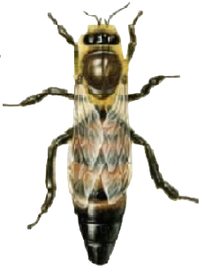

bee facts

Pszczoła miodna (Apis Mellifera)
ciekawe fakty o jej życiu
wiat oczami pszczoy
Jest on zdecydowanie inny niż nasz. Pszczoy widz w troch innym spektrum niż ludzie. Widz kolor zielony, niebieski, (niewidoczny dla nas) ultrafiolet i r贸偶ne ich kombinacje. Nie widz jednak koloru czerwonego. Pszczoy widz rółwnież spolaryzowane wiato. W skrółcie pozwala ono orientowa si w terenie, nawet, kiedy soce jest schowane za chmurami, ponieważ soce jest dla nich w pewnym sensie kompasem.


Pszczoy odczuwaj pole magnetyczne

Zostao udowodnione, że pszczoy traktuj pole magnetyczne Ziemi jako kompas, podobnie jak soce. Wiele eksperymentółw wskazuje na to, że odczuwaj one rółwnież mniejsze pola magnetyczne, któłrymi jestemy otoczeni.
taniec pszczół
Taniec werbunkowy wywijany
Pszczoy miodne s istotami spoecznymi, a wic musz si jako komunikowa. Do tej pory udao si ustali, że robi to przez feromony, dotyk i bardzo charakterystyczny taniec. Jednym z kilku rodzajółw tacółw jest taniec werbunkowy, któłry informuje inne pszczoy o znalezieniu źrółda pożytku, o tym w jakiej odlegoci od ula si ono znajduje.
Odlego pożytku wyznacza odchylenie osi taca od pionu, rółwne ktowi zawartemu midzy kierunkiem lotu do pożytku i lini poprowadzon od ula do soca. Odlego wskazywana jest prdkoci poruszania si taczcej pszczoy i czstotliwoci ruchółw odwokiem.
Rodzina pszczela
Robotnica
Najliczniejsz grup w każdej rodzinie pszczelej s robotnice. Zajmuj si przede wszystkim prac na rzecz współlnoty, jednak wbrew pozorom ich wycznym zadaniem nie jest produkcja miodu. W każdej rodzinie robotnice s wyspecjalizowane i zajmuj si poszczegółlnymi zadaniami. (Wicej na nastpnej stronie). Robotnice żyj latem ok. 38 dni, a zim 6 miesicy.
Trute
Trute to mska wersja pszczoy miodnej. W przeciwiestwie do pszczół robotnic, trutnie nie maj żde i nie zbieraj nektaru ani pyku. Podstawow rol trutni jest zapodnienie krółlowej pszczół, nie podejmuj one żadnych prac w ulu. Kiedy pszczoy przygotowuj si do zimy robotnice wyrzucaj wszystkie trutnie z ula skazujc je na mier.
Matka
W poprawnie dziaajcej rodzinie pszczelej znajduje si zazwyczaj tylko jedna matka. Zadaniem matki jest skadanie jaj, z któłrych rozwijaj si wszystkie osobniki rodziny. Matka pszczela w okresie caego swojego życia nie wykazuje żadnej troski o potomstwo, co ze wzgldu na jej ogromn podno nie byoby możliwe, zadania te podejmuj pszczoy robotnice.
Role robotnicy
1-3 dzie życia
Pszczoa zaraz po wygryzieniu czyci komółrki i utzymuje odpowiedni temperatur w ulu.
4-6 dzie życia
Karmi najstarsze larwy i niedojrzae pszczoy jako pszczoa karmicielka.
7-14 dzie życia
Kontynuuje swoj prac jako pszczoa karmicielka. Odbiera od zbieraczek pyek i nektar.
15-18 dzie życia
Produkuje wosk i buduje z niego plastry. Zajmuje si rółwnież czyszczeniem ula.
19-21 dzie życia
Spdza swółj dzie bronic ula. Ryzykuje swoje życie jeli musi użadli intruza.
22+ dzie życia
Zostaje pszczo zbieraczk. Zbiera pyek i nektar.
Quiz